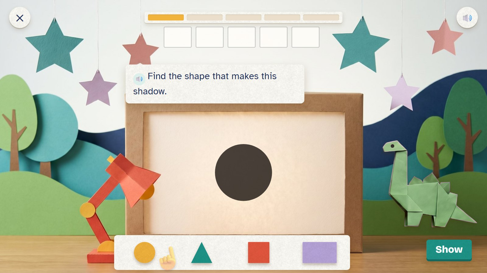
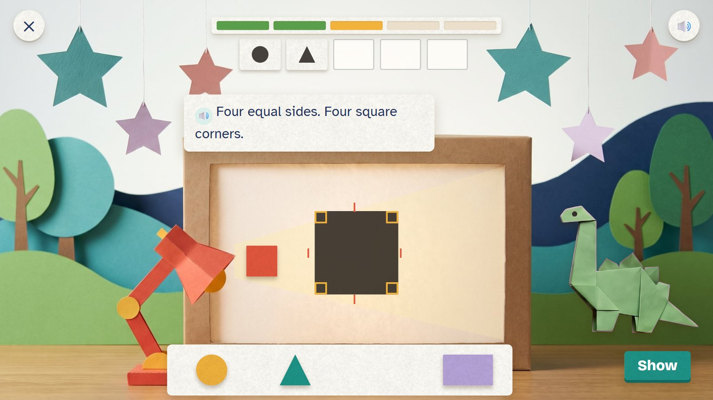
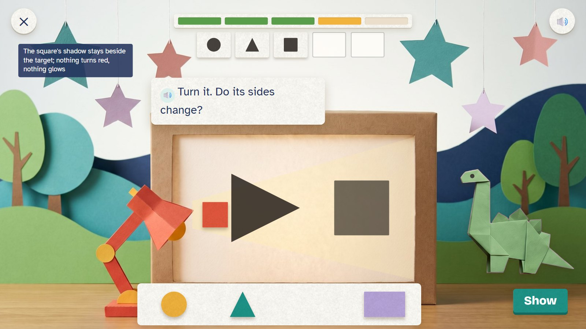
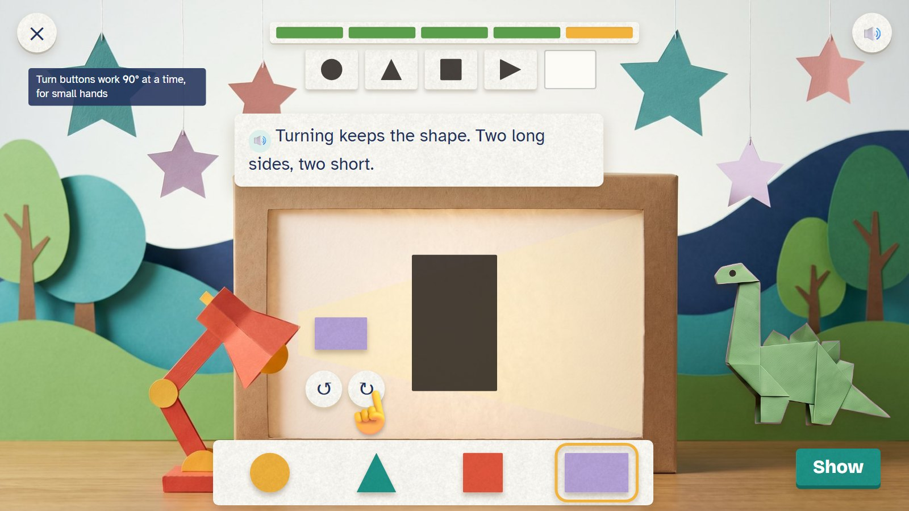
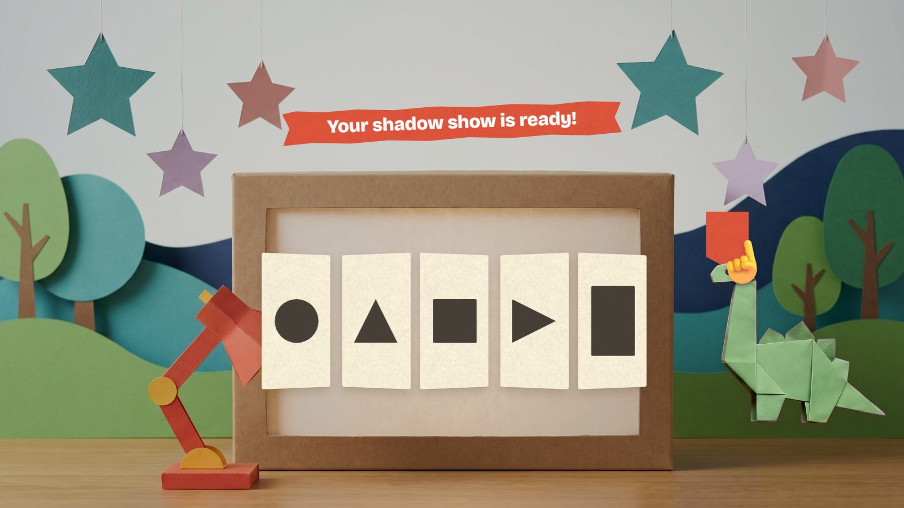

Shadow Theatre
Zedu is putting on a shadow show. A shadow appears on the paper screen. The child finds the paper shape that makes it, holds it in the lamp's beam, turns it until the shadows match and presses Show. The shadow is flat, so it is exactly the shape: turning a shape never changes what it is.
Pre-K–K · ages 4–6 E22 Shape inspection + E24 Shape moves paper move: cast a shadow, turn
Skill: Recognise flat shapes (circle, triangle, square, rectangle) however they are turned. Host: Zedu the dinosaur. One activity is 5 rounds, about two minutes.
🎉 The fun
Shapes throw real shadows, and turning a shape turns its shadow too.
🎥 The view
Fixed. The screen, the lamp and the shapes stay in view.
🎆 The finale
The five shadow panels fold out into a little theatre; the child pulls the curtain tab (2.5 seconds).
Six moments

1The first shadow
A round shadow on the screen; four paper shapes on the tray. A see-through hand points to the tray.
🔊 Find the shape that makes this shadow.

2Circle, triangle
The circle panel is done (top). The child holds the triangle in the beam; its shadow fits the target.
🔊 Circle. Triangle!
The shape held in the beam throws its shadow on the screen.

3The square
Little marks show its four equal sides and four square corners.
🔊 Four equal sides. Four square corners.
A square is checked by its sides and corners, not by how it looks.

4A wrong try
The target is a triangle on its side. The child showed the square; its shadow stays beside the target.
🔊 Turn it. Do its sides change?
Nothing turns red and nothing glows. The square's shadow stays until the child changes it.

5Turning
Fixed with the triangle, turned. Now a long rectangle on its end: the child turns the lilac rectangle with the ↻ button.
🔊 Turning keeps the shape. Two long sides, two short.
Turn buttons work 90° at a time, for small hands; dragging works too.

6The show
Five panels in the theatre. The child pulls the curtain tab.
🔊 Your shadow show is ready!
Mock-ups: Gemini's paper pictures (scenes, friends, props) with the maths pieces drawn by code, as the app would draw them. In the app everything moves; here it stands still.
Exactly what is asked
| Round | Task |
|---|---|
| 1 | A circle |
| 2 | A triangle standing up: 3 straight sides |
| 3 | A square: 4 equal sides and 4 square corners |
| 4 | A triangle turned on its side (90°) |
| 5 | A long rectangle turned on its end (90°): 2 long and 2 short sides |
This is one activity card. The skill's five steps (see it, fill one part, on your own, check it, word problem) are five different cards made from the same engine. Stars count first tries only: 5 of 5 = 3 stars, 4 = 2, 3 = 1.
Wrong answers we expect, and what happens
| Mistake | Looks like | What happens (never red, never "wrong") |
|---|---|---|
| A turned shape looks new | a triangle on its side is "an arrow" | "Turn it. Do its sides change?" |
| Square for a rectangle | four sides, but not all equal | marks appear on the sides: "Are all four the same?" |
| Rectangle for a square | four square corners, sides not equal | Zedu counts the long and the short sides |
| Choosing by colour | the red one, because red is nice | the shadow has no colour: "Look at the edges." |
What it needs
- The shadow theatre with its lamp, drawn once (Gemini)
- Shapes and shadows drawn by code, exact
- Turn buttons and the tray (code)
- Zedu in three poses
- Voice: shape names, sides and corners, four tips
Test robot: Reads the target shape and its turn from the question, picks that shape, turns it in 90° steps and presses Show. Once it shows a square for a turned triangle, to check the tip.
One question
← Back to the second plan · ← Dino Spots · Tear-off Tickets →